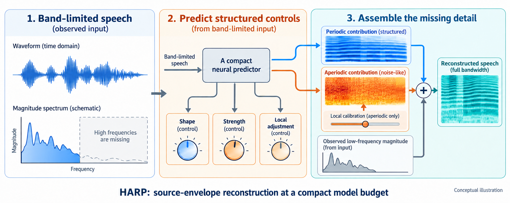
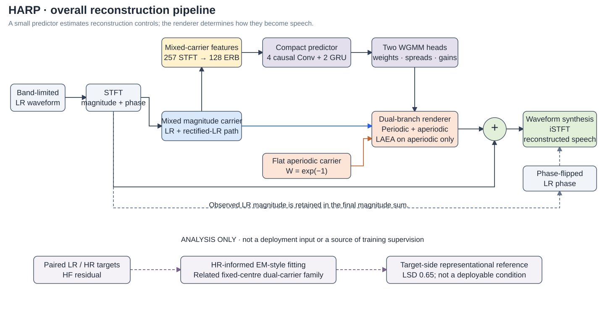
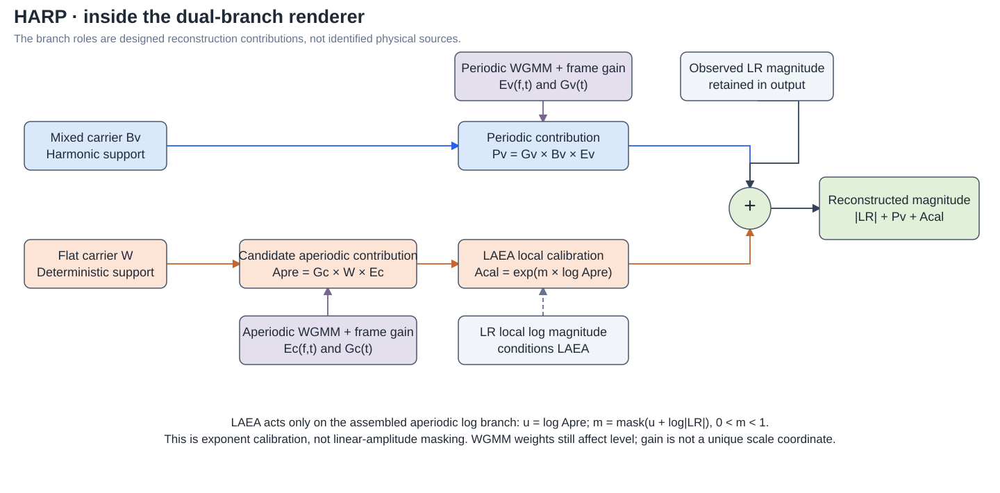

Shape & strength
Two fixed-centre weighted Gaussian mixture model (WGMM) envelopes shape mixed and flat carriers. A positive frame gain gives each branch a direct overall-strength control.
SPEECH STRUCTURE · COMPACT RECONSTRUCTION
† Corresponding author
A small network predicts how to shape and scale two reconstruction contributions. Speech structure determines how they become the missing high-frequency detail.
HWB-plus → HARP at the same reported compact budget. HARP scores are means over three training seeds.
Bandwidth-limited speech loses high-frequency cues. Recovering them requires inference: the low-resolution (LR) signal does not uniquely determine the original high-resolution (HR) signal.
With a very small model, how should acoustic knowledge guide reconstruction? HARP uses established source–envelope ideas to make branch strength, spectral shaping, and combination rules explicit—and separately testable.

可以把缺失高频的重建理解成“按规则补细节”。网络不用直接决定每一个谱点，而是预测两条支路的谱形和强度：一条借助已有的谐波支撑，另一条提供非周期的细节。增益调整体强度，LAEA 只校正非周期支路的局部变化，最后与保留的 LR 幅度相加。这里借鉴的是已有声学建模思想；本文的价值是把这些关系落实到极小预算的 BWE 中，并用对照实验检查各项设计的作用。
HARP builds on our HWB / HWB-plus decoder. It introduces explicit branch frame gains, replaces learned fusion with direct magnitude addition, and repositions the former BGM block as LR-conditioned Aperiodic Envelope Activation (LAEA).

Two fixed-centre weighted Gaussian mixture model (WGMM) envelopes shape mixed and flat carriers. A positive frame gain gives each branch a direct overall-strength control.
LAEA uses local LR information to adjust the assembled aperiodic log branch before composition. The periodic branch bypasses this module.
The periodic contribution, calibrated aperiodic contribution, and observed LR magnitude are added. Inference uses phase-flipped LR phase.

For candidate aperiodic magnitude A, LAEA forms u = log A, predicts m = mask(u + log|LR|), and returns exp(m · u). Thus it calibrates an exponent in the linear domain, rather than applying the ordinary mask m · A.
The flat aperiodic carrier is deterministic (exp(−1)), not sampled noise. WGMM weights and spreads still affect level: explicit gain does not imply a unique shape–scale decomposition. Numerical logarithms follow the implementation's magnitude floor.
System scores show whether HARP helps. These experiments ask which choices matter and what the representation can express.
WHAT MAKES DIRECT ADDITION VIABLE?
With LAEA held on, direct addition without frame gains gives LSD 1.43. Adding gains brings it to 0.77. A learned gate with gains also reaches 0.77.
The evidence supports gain-enabled direct composition. It does not show that direct addition alone is better than a gate.
| Composition | No gain | Gain |
|---|---|---|
| Direct addition | 1.43 | 0.77 |
| Learned gate | 0.78 | 0.77 |
DOES LOCAL APERIODIC CALIBRATION HELP?
Turning LAEA on changes LSD from 0.80 to 0.77 and PESQ from 3.28 to 3.39. DNSMOS and NISQA also increase in this controlled single-seed comparison.
This supports the local correction's role in the complete core. It does not establish physical aperiodicity recovery or optimal placement among every possible branch design.
| LAEA | LSD ↓ | PESQ ↑ |
|---|---|---|
| Off | 0.80 | 3.28 |
| On | 0.77 | 3.39 |
HR-reference branch diagnostic: aperiodic log loss 11.54 → 6.62; lower means closer to that reference.
CAN THE RELATED REPRESENTATION EXPRESS THE TARGET?
An independently trained HR-input encoder reaches 0.68 LSD. Direct HR-informed fitting in a related dual-carrier family reaches 0.65. These are complementary analyses, not deployable competitors.
The results support the representation's capacity and motivate better prediction from available LR cues. They do not prove that a larger LR encoder will close the gap, or that 0.65 is an LSD lower bound.
| Condition | LSD | HR at test |
|---|---|---|
| Deployed HARP | 0.77 | No |
| HR-input encoder | 0.68 | Yes |
| EM-style HR fit | 0.65 | Yes |
The fit optimizes linear residual squared error, not LSD; its parameter family differs from the deployed model.
The main VCTK comparison is followed by an independently trained LibriSpeech evaluation and a supporting reduced-data study.
| System | Params (M) ↓ | MAC/s (M) ↓ | LSD ↓ | DNSMOS ↑ | PESQ ↑ | NISQA ↑ |
|---|---|---|---|---|---|---|
| Sinc interpolation a | — | — | 3.26 | 2.90 | 3.11 | 2.85 |
| AERO a | 19.41 | 35,780 | 0.90 | 3.29 | 2.84 | 3.54 |
| BAE-Net a | 2.83 | 128 | 0.89 | 3.34 | 2.79 | 3.61 |
| BAE-Lite a | 0.57 | 35 | 0.89 | 3.27 | 2.77 | 3.74 |
| VM-ASR b | 6.13 | 980 | 0.79 | 3.29 | 2.98 | 3.62 |
| AP-BWE b | 29.75 | 5,857 | 0.91 | 3.41 | 2.76 | 3.79 |
| HWB-Net a | 0.200 | ≈21.67 | 0.94 | 3.35 | 2.85 | 3.86 |
| HWB-plus b | 0.194 | ≈21.67 | 0.83 | 3.44 | 3.11 | 3.97 |
| HARP ours · 3 seeds | 0.194 | ≈21.67 | 0.77±0.004 | 3.49±0.01 | 3.38±0.02 | 3.99±0.03 |
a Matched-protocol scores taken from our HWB-Net study. b Evaluated in the present study; HWB-plus is our reimplementation, not its previously published scores. External MACs retain each source's accounting convention; HWB-family values include WGMM reconstruction.
HARP reports mean ± sample standard deviation across three training seeds. Seed-matched paired tests against separately trained HWB-plus controls support consistent LSD, DNSMOS, and PESQ improvements; NISQA has no consistent significant advantage.
Both systems are trained from scratch on train-clean-100, selected on dev-clean, and evaluated on disjoint test-clean. This is additional-corpus replication, not zero-shot transfer.
| System | LSD ↓ | DNSMOS ↑ | PESQ ↑ | NISQA ↑ |
|---|---|---|---|---|
| HWB-plus | 0.933 | 3.438 | 2.487 | 3.279 |
| HARP | 0.926 | 3.426 | 2.687 | 3.234 |
Single training run per system. The 0.007 LSD difference is small; no-reference estimates are mixed and slightly favor HWB-plus.
HARP has lower LSD than VM-ASR at 10%, 25%, 50%, and 100% of the VCTK training utterances, with the same 107 speakers retained.
A system-level comparison, not an isolated causal test of priors. It does not establish reduced speaker requirements or lower training time.
Both corpora use the same synthetic bandwidth degradation and 16 kHz reconstruction setup: a 2–3 kHz cutoff, Butterworth orders 5–10, and a 512-point Hann STFT with 256-sample hop. LibriSpeech follows the official train-clean-100 / dev-clean / test-clean split.
The inherited VCTK protocol uses p283/p360 for both validation and reporting (1,785 scored utterances). This can make absolute results optimistic; applying it consistently does not remove selection bias. LibriSpeech provides a separate dev/test check with broader speaker coverage. Both evaluations remain English-only with synthetic degradations; no human MOS study is reported.
The VCTK significance procedure uses two-sided paired sign-flip permutation tests with 10,000 permutations, within-seed Holm correction over four metrics, and agreement across three seed-matched comparisons. Its scope is HARP versus HWB-plus controls, not every external row.
Listen to paired VCTK examples below. LibriSpeech and analysis-only examples remain placeholders. These demonstrations do not constitute a subjective listening study.
Each VCTK row preserves the same stored LR/HR pair and utterance duration across systems, with no demo-specific normalization or trimming. HARP audio comes from the new independent reproduction; it is separate from the original three-seed statistics. Audio provenance and credits.
The HARP manuscript and model release will be linked here when available. This page is an explanation and listening companion, not an online inference service. Visual organization is inspired by the ReZero project page; all HARP graphics were created for this project.